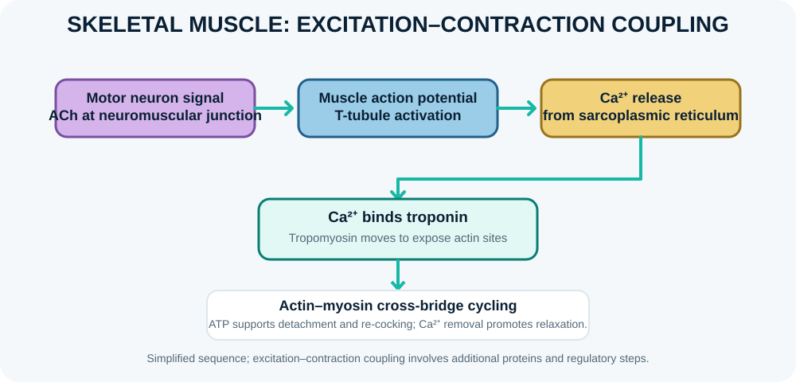

Muscle physiology: excitation, contraction and force

Skeletal muscle contraction begins when a motor neuron releases acetylcholine at the neuromuscular junction. The muscle action potential spreads along the sarcolemma and T-tubules, triggering calcium release from the sarcoplasmic reticulum. Calcium binds troponin, shifting tropomyosin and permitting actin-myosin cross-bridge cycling. ATP is required for myosin detachment and re-cocking, and calcium reuptake supports relaxation. Force depends on motor-unit recruitment, firing frequency, muscle length, contraction velocity, architecture and fatigue. Cardiac and smooth muscle use related but distinct excitation-contraction mechanisms.
Learning objectives
- Outline excitation-contraction coupling in skeletal muscle.
- Explain the roles of calcium, ATP, actin and myosin.
- Identify factors that influence muscle force.
High-yield study points
- Acetylcholine initiates the end-plate potential at the neuromuscular junction.
- Calcium binds troponin C in skeletal muscle and exposes myosin-binding sites on actin.
- ATP enables myosin detachment from actin and supports calcium pumping during relaxation.
- Motor-unit recruitment and rate coding increase whole-muscle force.
- Isometric contractions generate force without changing muscle length appreciably; isotonic contractions involve changing length under load.
Clinical connection
Neuromuscular-junction disorders, electrolyte disturbances and muscle diseases can cause weakness through different mechanisms. Fatigue is multifactorial and should not be attributed to one process without evidence.
Check your understanding
- Which ion binds troponin to initiate skeletal-muscle contraction?
Reveal answer
Calcium (Ca²⁺).
- What is the role of ATP in cross-bridge cycling?
Reveal answer
ATP binding detaches myosin from actin; ATP hydrolysis re-cocks the myosin head for another cycle.
- What is the basic functional unit of striated muscle contraction?
Reveal answer
The sarcomere, extending from one Z disc to the next.
Skeletal muscle contraction: from nerve signal to force
A motor neuron action potential reaches the neuromuscular junction and releases acetylcholine. Acetylcholine activates nicotinic receptors on the motor end plate, producing an end-plate potential that normally triggers a muscle action potential. The action potential travels along the sarcolemma and down T-tubules, activating voltage-sensitive proteins that trigger calcium release from the sarcoplasmic reticulum.
Calcium binds troponin C, moving tropomyosin away from actin’s myosin-binding sites. Myosin heads bind actin and cycle through power strokes using ATP. ATP binding allows myosin to detach; ATP hydrolysis re-cocks the head. Relaxation occurs as calcium is pumped back into the sarcoplasmic reticulum and binding sites are covered again.
What changes during contraction?
Thin filaments slide past thick filaments; the filaments themselves do not substantially shorten. Sarcomeres shorten, Z-discs approach, the I band and H zone narrow, while the A band remains approximately constant. This sliding-filament model is a common exam focus.
Force, motor units and fatigue
A motor unit is one motor neuron and all the muscle fibres it innervates. Force increases through recruitment of additional motor units and changes in firing frequency (rate coding). Smaller motor units are generally recruited before larger ones during graded voluntary contraction. Muscle fatigue is multifactorial and may involve changes in excitation–contraction coupling, metabolites, substrate availability and central drive; it is not explained by a single waste product.
Smooth muscle uses calcium–calmodulin to activate myosin light-chain kinase, unlike skeletal muscle’s troponin-based regulation. Cardiac muscle also uses calcium-induced calcium release and has specialised electrical coupling through intercalated discs.
Self-test
- What binds calcium in skeletal muscle?
- Which sarcomere band remains approximately constant during shortening?
- What is a motor unit?
Answers with reasoning
1. Troponin C. 2. A band. 3. One motor neuron and all muscle fibres it innervates.
From motor neuron to muscle force
In skeletal muscle, an action potential in a somatic motor neuron reaches the neuromuscular junction and releases acetylcholine. Acetylcholine activates nicotinic receptors on the motor end plate, producing an end-plate potential that usually triggers a muscle action potential. The signal travels along the sarcolemma and into transverse tubules, leading to calcium release from the sarcoplasmic reticulum.
Excitation–contraction coupling
In skeletal muscle, voltage-sensitive dihydropyridine receptors in the T-tubule membrane are mechanically coupled to ryanodine receptors in the sarcoplasmic reticulum. Calcium binds troponin C, moving tropomyosin away from actin's myosin-binding sites. Myosin heads cycle through attachment, power stroke, detachment and re-cocking using ATP. Calcium is pumped back into the sarcoplasmic reticulum by SERCA, allowing relaxation.
Force and recruitment
Muscle force increases through recruitment of additional motor units and changes in firing frequency. Small motor units are commonly recruited before larger units as force demand rises. Force also depends on muscle length, contraction velocity, fatigue, architecture, pennation and the mechanical advantage of the tendon at a joint.
Energy supply
ATP is required for cross-bridge cycling and calcium pumping. Phosphocreatine buffers ATP during rapid, brief effort; glycolysis can supply ATP quickly; and oxidative phosphorylation supports sustained activity when oxygen delivery and mitochondrial capacity are adequate. These systems operate together, with their relative contributions changing over time and with exercise intensity.
Further reading
OpenStax: Skeletal Muscle and Muscle Fibre Contraction and Relaxation.